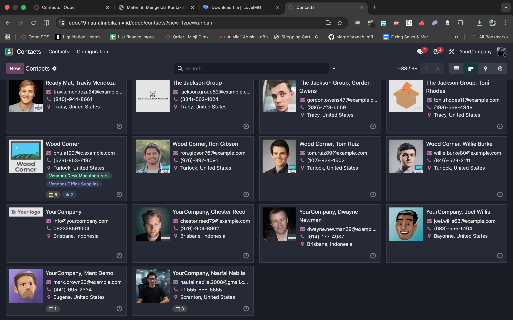

Saat Anda membuka aplikasi Contacts, tampilan default yang muncul adalah Kanban View.
Mengapa tampilan ini spesial?
- Lebih Visual: Anda bisa langsung melihat foto profil kontak.
- Ringkas: Menampilkan informasi utama (Nama, Email, Kota) dalam bentuk kartu.
Tips: Jika Anda butuh melihat data dalam bentuk tabel baris, Anda bisa beralih ke
List View (ikon garis-garis) di pojok kanan atas.

📸 Screenshot: Kanban View vs List View